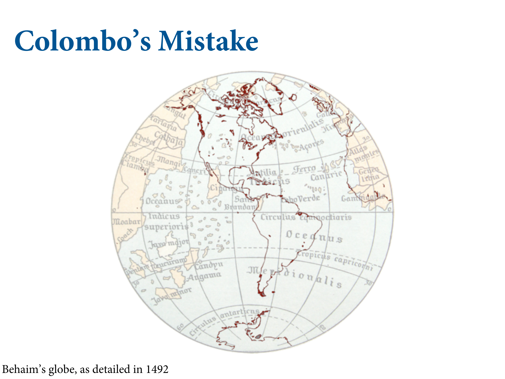
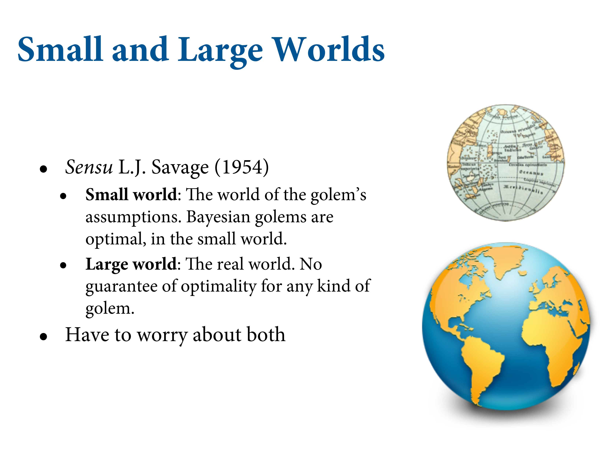
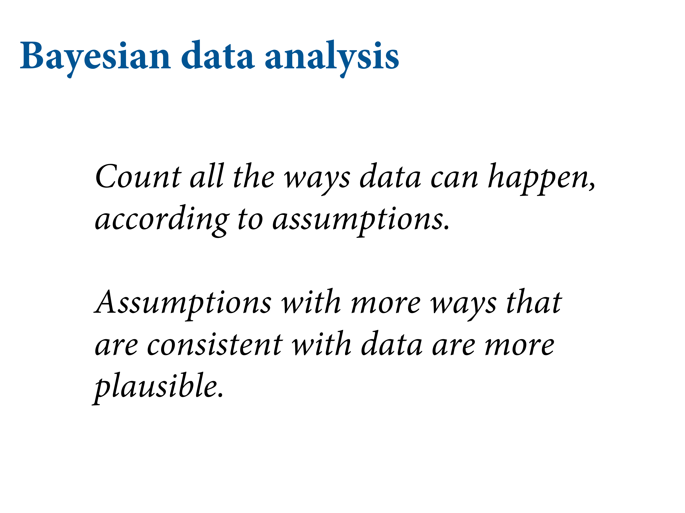

library(here)
source(here::here("code/scripts/source.R"))slides_dir = here::here("docs/slides/L01")
Keep in mind that inside the model, there’s this perfectly logical world. But that’s the small world. Colombo rediscovered the Americas. The most interesting thing is that he charted his course using a globe that makes the earth much smaller than it is. Ironic because the ancient Greeks knew how big it was. But Colombo listened to an Austrian called Behaim who decided to make it smaller. So the Atlantic and Pacific oceans were joined. You can imagine sailing from Spain.

Consider this analogy. When you make a model, you’re Colombus planning with the Austrian globe. Your responsibility is to think you might be wrong, and that the Earth is bigger than that. Study and reconsider the effects. In the real world, there are no optimal procedures. No guarantee that it will guide our behaviour optimally. We should use both of these worlds, and bounce back and forth between them.
